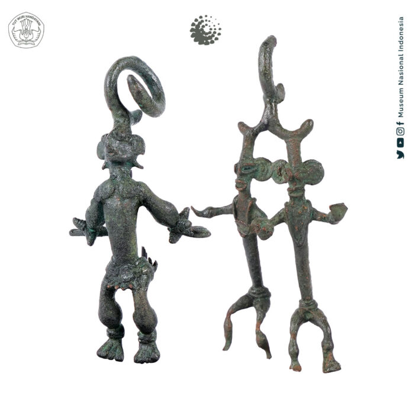
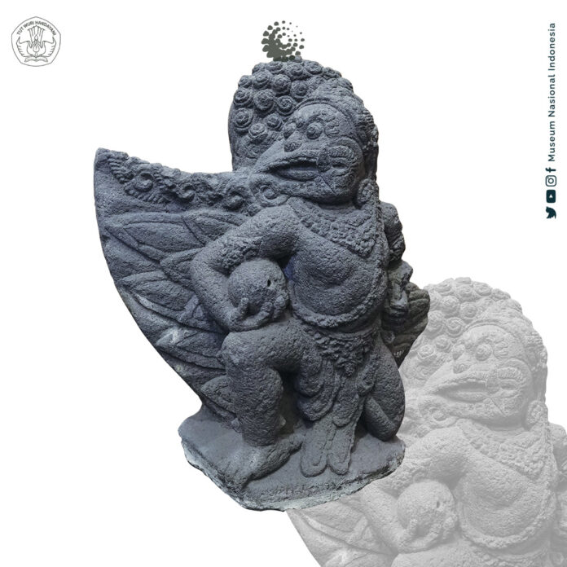
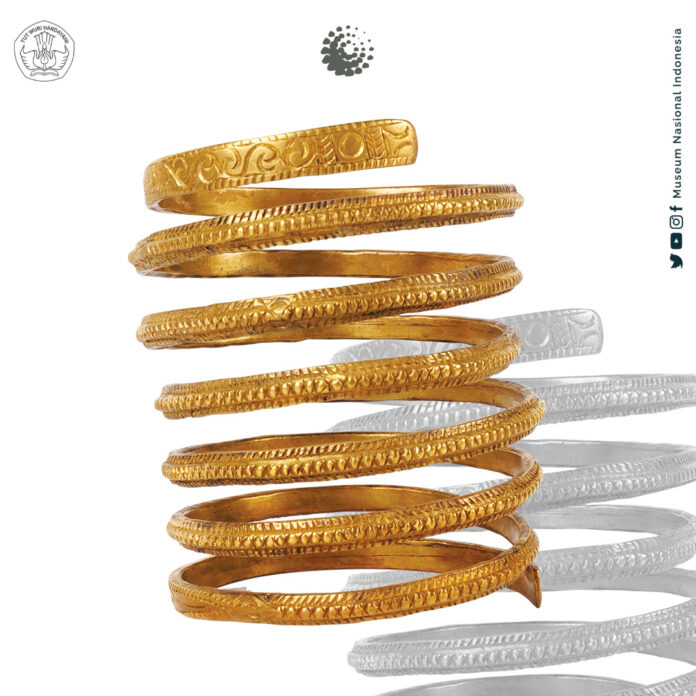
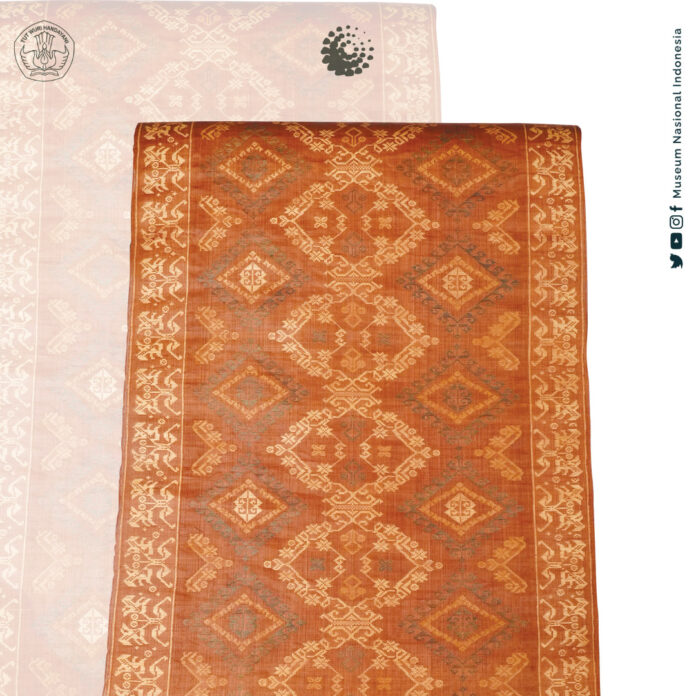

SEKILAS MUSEUM NASIONAL INDONESIA

TENTANG MUSEUM NASIONAL
Eksistensi Museum Nasional diawali dengan berdirinya suatu himpunan yang bernama Bataviaasch Genootschap van Kunsten en Wetenschappen, didirikan oleh Pemerintah Belanda pada tanggal 24 April 1778. Pada masa itu di Eropa tengah terjadi revolusi intelektual (the Age of Enlightenment) yaitu dimana orang mulai mengembangkan pemikiran-pemikiran ilmiah dan ilmu pengetahuan. Pada tahun 1752 di Haarlem, Belanda berdiri De Hollandsche Maatschappij der Wetenschappen (Perkumpulan Ilmiah Belanda). Hal ini mendorong orang-orang Belanda di Batavia (Indonesia) untuk mendirikan organisasi sejenis.
Bataviaasch Genootschap van Kunsten en Wetenschappen (BG) merupakan lembaga independen yang didirikan untuk tujuan memajukan penetitian dalam bidang seni dan ilmu pengetahuan khususnya dalam bidang-bidang ilmu biologi, fisika, arkeologi, kesusastraan, etnologi dan sejarah, Berta menerbitkan hash penelitian. Lembaga ini mempunyai semboyan “Ten Nutte van het Algemeen” (Untuk Kepentingan Masyarakat Umum). Salah seorang pendiri lembaga ini, yaitu JCM Radermacher, menyumbangkan sebuah rumah miliknya di Jalan Kalibesar, suatu kawasan perdagangan di Jakarta-Kota. Kecuali itu ia juga menyumbangkan sejumlah koleksi benda budaya dan buku yang amat berguna, sumbangan Radermacher inilah yang menjadi cikal bakal berdirinya museum dan perpustakaan.
Masa pemerintahan Inggris di Jawa (1811-1816), Letnan Gubernur Sir Thomas Stamford Raffles menjadi Direktur perkumpulan ini. Oleh karena rumah di Kalibesar sudah penuh dengan koleksi, Raffles memerintahkan pembangunan gedung baru untuk digunakan sebagai museum dan ruang pertemuan untuk Literary Society (dulu disebut gedung “Societeit de Harmonie”). Bangunan ini berlokasi di jalan Majapahit nomor 3. Sekarang di tempat ini berdiri kompleks gedung sekretariat Negara, di dekat Istana kepresidenan.
KOLEKSI
ARKEOLOGI
Arca Buddha
 Perunggu Sungai Komering, Palembang, Sumatra Selatan Abad 8 – 11 Arca Buddha berdiri samapāda temuan Sungai Komering, Palembang yang bergaya seni Sailendra. Tangan kanan bersikap abhaya (menolak bahaya), tangan kirinya memegang ujung jubah. Pakaiannya berupa jubah tipis yang menutupi kedua bahu. Gaya seni arca Sailendra dapat dicirikan dari bentuknya yang proporsional dan benar-benar menggambarkan sosok dewa yang dipuja. Di samping itu, arca Buddha ini juga mendapat pengaruh kesenian Pala. Karakter kesenian Pala dapat dilihat dari penggambaran pakaian berupa jubah tipis yang menutupi kedua bahu, usnisa (tonjolan di atas kepala) digambarkan lebih besar, dan lipatan jubah disekitar leher terlihat seperti kalung sementara bagian kain yang menjuntai ke bawah terlihat seperti ekor burung layang-layang.
Perunggu Sungai Komering, Palembang, Sumatra Selatan Abad 8 – 11 Arca Buddha berdiri samapāda temuan Sungai Komering, Palembang yang bergaya seni Sailendra. Tangan kanan bersikap abhaya (menolak bahaya), tangan kirinya memegang ujung jubah. Pakaiannya berupa jubah tipis yang menutupi kedua bahu. Gaya seni arca Sailendra dapat dicirikan dari bentuknya yang proporsional dan benar-benar menggambarkan sosok dewa yang dipuja. Di samping itu, arca Buddha ini juga mendapat pengaruh kesenian Pala. Karakter kesenian Pala dapat dilihat dari penggambaran pakaian berupa jubah tipis yang menutupi kedua bahu, usnisa (tonjolan di atas kepala) digambarkan lebih besar, dan lipatan jubah disekitar leher terlihat seperti kalung sementara bagian kain yang menjuntai ke bawah terlihat seperti ekor burung layang-layang.
Figurin Perunggu

Patung perunggu ini menggambarkan penari-penari yang bergaya dinamis. Gaya patung-patung tersebut, seakan-akan menggambarkan babak sebuah tarian. Patung bergaya dinamis ini merupakan salah satu dari Sembilan buah patung yang ditemukan di Bangkinang, Riau. Terdapat lingkaran di atas kepalanya, sebagai kaitan. Kemungkinan digunakan sebagai bandul kalung dan sebagai benda upacara keagamaan.
Arca Garuda

Nama Garuda berasal dari kata Sanskerta. Garuda digambarkan sebagai kendaraan (wahana) Dewa Wisnu. Dalam agama Hindu, dewa Wisnu merupakan salah satu dari tiga dewa utama (trimurti) yang dipercaya sebagai Sang Pemelihara Alam Semesta. Garuda seringkali dilukiskan memiliki kepala, sayap, ekor dan moncong burung elang serta tubuh, tangan dan kaki seorang manusia. Garuda digunakan sebagai lambang kerajaan Airlangga pada abad ke-11 Masehi. Prasasti-prasasti yang dikeluarkan di masa pemerintahan Airlangga kerap menggunakan lambang Garuda yang dipahat di bagian puncak prasasti yang dikenal dengan sebutan Garudamukha lancana. Lambang garuda dipakai pula oleh raja-raja kerajaan Janggala yang dianggap penerus kerajaan Airlangga.
ETNOGRAFI
Gelang Aceh

Kuningan Aceh Awal abad ke – 20. Gelang ini dikenakan oleh perempuan Alas sebagai pelengkap dari busana tradisional saat upacara adat yang bersifat formal. Biasanya dikombinasikan dengan kalung dan anting.
Alusu
 Kayu, Bambu, Daun lontar, Biji – bijian Sulawesi Selatan. Alusu adalah alat musik perkusi berbentuk tabung atau kotak yang diisi biji – bijian. Alat ini memegang peranan penting dalam tarian mabissu. Menurut kepercayaan setempat, bunyi yang terdengar dari alusu dianggap sebagai pengantar jalannya syair – syair berisikan pujian yang dipanjatkan kepada Sangiang Serri saat upacara menanam padi.
Kayu, Bambu, Daun lontar, Biji – bijian Sulawesi Selatan. Alusu adalah alat musik perkusi berbentuk tabung atau kotak yang diisi biji – bijian. Alat ini memegang peranan penting dalam tarian mabissu. Menurut kepercayaan setempat, bunyi yang terdengar dari alusu dianggap sebagai pengantar jalannya syair – syair berisikan pujian yang dipanjatkan kepada Sangiang Serri saat upacara menanam padi.
Kain Koffo

Serat tanaman Kepulauan Sangihe – Talaud, Sulawesi Utara Awal abad ke – 20 Ragam hias pada koffo (Talaud) atau Hote (Sangihe) dibuat menggunakan teknik lungsi tambahan dengan alat tenun gedog. Koffo dengan ragam hias dipakai untuk keperluan hiasan, sedangkan koffo polos digunakan untuk pakaian.
KONTAK MUSEUM NASIONAL